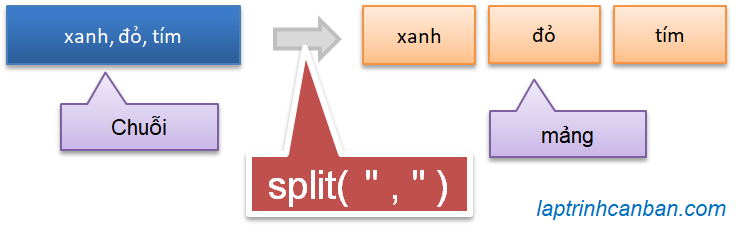

Hướng dẫn cách tách chuỗi trong JavaScript. Bạn sẽ học được tất cả các cách sử dụng phương thức split() để tách chuỗi thành mảng trong JavaScript sau bài viết này.
Chúng ta có 6 phương pháp sử dụng phương thức split() để tách chuỗi thành mảng trong JavaScript như sau:
- Tách chuỗi trong JavaScript bằng phương thức split() với một ký tự phân tách
- Tách chuỗi trong JavaScript bằng phương thức split() với một chuỗi ký tự phân tách
- Tách chuỗi trong JavaScript bằng phương thức split() với regular expressions (khoảng trắng, dấu tab, xuống dòng)
- Tách tất cả các ký tự trong chuỗi JavaScript bằng một chuỗi trống
- Tách chuỗi trong JavaScript bằng ký tự phân tách khi ký tự đó ở đầu hoặc cuối chuỗi ban đầu
- Tách chuỗi trong JavaScript bằng phương thức split() với số lần tách chỉ định
Lại nữa, trong trường hợp bạn muốn tách số trong chuỗi JavaScript, hãy tham khảo bài viết sau đây:
- Xem thêm: Tách số trong chuỗi JavaScript.
Cú pháp tách chuỗi trong JavaScript bằng phương thức split()
Chúng ta sử dụng phương thức split() để tách chuỗi trong JavaScript bằng một ký tự phân cách và thu về kết quả là một mảng có các phần tử là các chuỗi nhỏ vừa được tách ra.

Chúng ta tách chuỗi bằng phương thức split() với cú pháp sau đây:
str. split ( sep, limit ) ;
Trong đó :
strlà chuỗi cần tách.sep(viết tắt của separator) là ký tự phân cách dùng để tách chuỗi str ra các chuỗi nhỏ, và đối số này có thể lược bỏ.limitlà số lần tách lớn nhất, và đối số này cũng có thể lược bỏ.
Chúng ta có thể chỉ định ký tự phân cách sep bằng một ký tự, một chuỗi ký tự, hoặc là một biểu thức chính quy (regular expressions). Chuỗi str ban đầu sẽ được tách ra thành các chuỗi con bởi ký tự phân tách sep, và các chuỗi con này (không bao gồm ký tự phân tách sep) sẽ được lấy dưới dạng phần tử của mảng kết quả. Lưu ý là nếu ký tự phân tách sep được lược bỏ, cả chuỗi ban đầu sẽ được trả về dưới dạng phần tử trong mảng kết quả.
Với đối số limit, nếu nó được chỉ định thì chuỗi str ban đầu sẽ được tách ra cho tới khi số chuỗi con bằng với số limit. Lưu ý là chỉ có các chuỗi con đã được tách ra mới được trả về trong kết quả, còn phần chưa được tách sẽ không bao gồm trong kết quả. Và nếu chúng ta lược bỏ limit thì JavaScript mặc định limit là số lần tách lớn nhất có thể từ chuỗi.
Chúng ta sẽ cùng làm rõ những điều này thông qua các ví dụ cơ bản ở phần sau đây.
Tách chuỗi trong JavaScript bằng phương thức split() với một ký tự phân tách
Khi chỉ định sep là một ký tự phân tách, nếu sep tồn tại trong chuỗi ban đầu thì chuỗi đó sẽ được tách ra thành các chuỗi nhỏ hơn tại các vị trí chứa sep. Và các chuỗi con được tách ra sẽ được lưu giữ dưới dạng phần tử trong mảng kết quả.
Ví dụ cụ thể, chúng ta tách chuỗi trong JavaScript bằng dấu phẩy như sau:
let mystring = "Honda,Kiyoshi,Suzuki"; |
Tương tự thế, chúng ta cũng có thể tách một chuỗi có phần tử là chữ hoặc chữ số như sau:
let mystring_num = "1,2,3,4,5"; |
Tách chuỗi trong JavaScript bằng phương thức split() với một chuỗi ký tự phân tách
Khi chỉ định sep là một chuỗi ký tự, tương tự như ở trên thì nếu sep tồn tại trong chuỗi ban đầu thì chuỗi đó sẽ được tách ra thành các chuỗi nhỏ hơn tại các vị trí chứa sep. Và các chuỗi con được tách ra sẽ được lưu giữ dưới dạng phần tử trong mảng kết quả.
Tuy nhiên cần chú ý rằng nếu sep là một chuỗi ký tự phân tách thì phép toán tìm kiếm sẽ cần phải tìm ra toàn bộ chuỗi theo đúng thứ tự.
Ví dụ, chúng ta tách chuỗi ban đầu bằng một chuỗi ký tự phân tách and như sau:
let mystring = "Jan and Feb and Mar and Apr and May and Jun"; |
Tuy nhiên nếu chúng ta chỉ định chuỗi ký tự phân tách không đúng thứ tự như nó xuất hiện trong chuỗi cần tách , ví dụ như là dna hay nda chẳng hạn, thì phép toán tách chuỗi sẽ không được thực hiện đúng và cả chuỗi ban đầu sẽ được trả về như sau:
let mystring = "Jan and Feb and Mar and Apr and May and Jun"; |
Lại nữa, ngoài việc chỉ định chuỗi ký tự là chữ như trên thì chúng ta cũng có thể chỉ định chúng bằng tập hợp các dấu như ví dụ sau:
let months = 'Jan..Feb..Mar..Apr..May..Jun'; |
Tách chuỗi trong JavaScript bằng phương thức split() với regular expressions
Chúng ta cũng có thể chỉ định sep là một biểu thức chính quy (regular expressions) để tách chuỗi trong JavaScript. Một số ví dụ đơn giản như sau:
Tách chuỗi trong JavaScript bằng khoảng trắng
Chúng ta tách chuỗi ban đầu bằng ký tự trắng được biểu diễn bởi RegEx là /\s/ như sau:
let mystring = "1 2 3 4"; |
Lưu ý là với các chuỗi chứa khoảng trắng liên tiếp, ví dụ như chuỗi "1 2 3 4" chẳng hạn thì RegEx trên sẽ không hiệu quả, vì trong kết quả thu về sẽ bao gồm cả các khoảng trắng được tách ra như sau:
let mystring = "1 2 3 4"; |
Khi đó, để tách chuỗi và bỏ đi tất cả các khoảng trắng trong chuỗi ban đầu, chúng ta cần sử dụng RegEx là /\s+/ như sau:
let mystring = "1 2 3 4"; |
Tách chuỗi trong JavaScript bằng dấu tab
Chúng ta tách chuỗi ban đầu bằng dấu tab biểu diễn bởi RegEx là /\t/ như sau:
let mystring = "1 2 3 4"; |
Tách chuỗi trong JavaScript bằng dấu gạch chéo /
Chúng ta tách chuỗi ban đầu bằng dấu chéo / biểu diễn bởi RegEx là /\// như sau:
let mystring = "2021/07/19"; |
Cách này thường được sử dụng khi cần tách ngày tháng năm ra khỏi một chuỗi thời gian trong JavaScript.
Tách chuỗi trong JavaScript bằng dấu xuống dòng
Chúng ta tách chuỗi ban đầu bằng dấu xuống dòng biểu diễn bởi RegEx là /\r\n|\n/ như sau:
let mystring = "Con cò mày đi ăn đêm\nĐậu phải cành mềm lộn cổ xuống ao"; |
Cách này thường được sử dụng khi cần tách cách dòng trong một chuỗi ký tự nhiều dòng trong JavaScript.
Tách tất cả các ký tự trong chuỗi JavaScript bằng một chuỗi trống
Khi chúng ta chỉ định đối số sep là một chuỗi trống thì tất cả các ký tự trong chuỗi ban đầu sẽ được tách ra và lưu lại dưới dạng phần tử trong mảng kết quả. Ví dụ:
let mystring = "bigcityboy"; |
Tách chuỗi trong JavaScript bằng ký tự phân tách khi ký tự đó ở đầu hoặc cuối chuỗi ban đầu.
Trong trường hợp ký tự phân tách lại nằm ở đầu hoặc cuối chuỗi cần tách ra trong JavaScript, một ký tự trắng sẽ được tách ra tại đó và cũng được lưu vào mảng kết quả.
Ví dụ, chúng ta tách chuỗi trong JavaScript bằng ký tự phân tách khi ký tự đó nằm ở cuối chuỗi như sau:
let mystring = "/Jan/Feb/Mar"; |
Tương tự với khi ký tự đó nằm ở đầu chuỗi:
let mystring = "Jan/Feb/Mar/"; |
Hoặc là khi ký tự phân tách nằm ở cả hai đầu của chuỗi ban đầu:
let mystring = "/Jan/Feb/Mar/"; |
Tách chuỗi trong JavaScript bằng phương thức split() với số lần tách chỉ định
Chúng ta chỉ định đối số limit khi muốn tách chuỗi trong JavaScript bằng phương thức split() với số lần tách chỉ định.
Ví dụ, chúng ta muốn tách chuỗi ban đầu với số lần tách lớn nhất là 2 lần như sau:
let mystring_num = "1,2,3,4,5"; |
Khi đó, sẽ chỉ có nhiều nhất 2 lần tách chuỗi được thực hiện, và chỉ có các chuỗi con đã được tách ra mới được trả về trong kết quả, còn phần chưa được tách sẽ không bao gồm trong kết quả mà thôi.
[ '1', '2' ] |
Hãy so sánh với kết quả trong trường hợp chúng ta không chỉ định số lần tách lớn nhất như sau.
let mystring_num = "1,2,3,4,5"; |
Lại nữa, đây là số lần tách lớn nhất có thể, chứ không nhất thiết là chuỗi ban đầu sẽ được tách ra bằng số lần chỉ định này nhé. Trong ví dụ sau, mặc dù chúng ta chỉ định limit = 3 nhưng kết quả cũng chỉ có thể tách số lần lớn nhất là 2 mà thôi.
let mystring_num = "1,2345"; |
Lưu ý khi tách chuỗi trong JavaScript bằng phương thức split()
Ở phần trên chúng ta đã cùng tìm hiểu các cách tách chuỗi thông dụng nhất trong JavaScript sử dụng phương thức split() rồi. Tuy nhiên một điểm bạn cần lưu ý khi sử dụng phương thức split() trong JavaScript, đó chính là phương thức split() sẽ tách các chuỗi con từ chuỗi ban đầu và tạo ra kết quả là một mảng, nhưng sẽ không làm thay đổi chuỗi ban đầu.
Hãy cùng kiểm chứng lại:
let mystring_num = "1,2,3,4,5"; |
Bạn có thể thấy rõ trước và sau khi sử dụng phương thức split() thì chuỗi ban đầu cũng không hề thay đổi rồi phải không nào?
Do đó khi sử dụng phương thức split() trong JavaScript, nếu bạn muốn sử dụng lại kết quả của phép tách nhiều lần trong chương trình, hãy luôn nhớ là phải gán kết quả này vào một biến nhé.
Tổng kết
Trên đây Kiyoshi đã hướng dẫn bạn cách tách chuỗi trong JavaScript bằng các phương thức split() rồi. Để nắm rõ nội dung bài học hơn, bạn hãy thực hành viết lại các ví dụ của ngày hôm nay nhé.
Và hãy cùng tìm hiểu những kiến thức sâu hơn về JavaScript trong các bài học tiếp theo.
HOME>> học javascript - lập trình javascript cơ bản>>02. chuỗi trong javascript